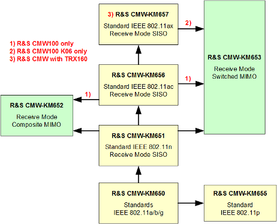

General Description
The WLAN multi-evaluation measurement captures a WLAN signal and measures its modulation accuracy and spectral properties. With its basic option R&S CMW-KM650, it is possible to perform IEEE 802.11a, b and g TX measurements.
Measuring a signal in the 4 GHz or 5 GHz band requires a 6 GHz option. Refer to the base user manual of your instrument model. |
The following options unlock enhanced functionality:
- R&S CMW-KM651 adds support for IEEE 802.11n SISO signals
- R&S CMW-KM655 adds support for IEEE 802.11p measurements
- R&S CMW-KM656 adds support for IEEE 802.11ac SISO measurements (R&S CMW-KM651 also required)
- R&S CMW-KM657 adds support for IEEE 802.11ax SISO measurements (R&S CMW-KM651 and R&S CMW-KM656 also required)
IEEE 802.11ax measurements are only supported on the R&S CMW with TRX160 - R&S CMW-KM652 enables composite MIMO measurements:
– IEEE 802.11n MIMO signals require also option R&S CMW-KM651. – IEEE 802.11ac MIMO signals require also option R&S CMW-KM656.
IEEE 802.11ac composite MIMO measurements are only supported on the R&S CMW100.
See "Composite MIMO Measurements" - R&S CMW-KM653 enables switched MIMO measurements:
– IEEE 802.11n MIMO signals require also option R&S CMW-KM651. – IEEE 802.11ac MIMO signals require also option R&S CMW-KM656.
IEEE 802.11ac switched MIMO measurements are only supported on the R&S CMW100.– IEEE 802.11ax MIMO signals require also option R&S CMW-KM657.
IEEE 802.11ax switched MIMO measurements are only available on the R&S CMW100 K06.
See "Switched MIMO Measurements" - R&S CMW-KM012 activates the multi-evaluation list mode for all firmware applications (see "Multi-Evaluation List Mode").
The multi-evaluation list mode for WLAN measurements is only supported on the R&S CMW500/2xx with BB Meas.

R&S CMW-KS650 allows you to set up an access point or station supporting IEEE 802.11a/b/g and to perform "combined signaling path" measurements. R&S CMW-KS651 adds support for IEEE 802.11n in SISO receive mode.
Several enhanced options require a specific instrument hardware. The following terms are used for groups of instrument models:
- R&S CMW100: Stands for any R&S CMW100 variant.
The RF ports are built into a radio test head. The test software is running on a connected computer. All tests are performed as non-signaling tests. - R&S CMW500/2xx: Stands for the R&S CMW500, 270 and 290.
The instrument provides RF ports and contains a computer where the test software is running. Combined signal path measurements are possible. - R&S CMW100/CMW with MUA: R&S CMW with advanced measurement board:
– Any R&S CMW100 contains an advanced measurement board. – An R&S CMW500/270/290 can be equipped with a measurement unit advanced (MUA, R&S CMW-B100H). - R&S CMW500/2xx with BB Meas: R&S CMW with baseband measurement unit.
An R&S CMW500/270/290 can be equipped with a baseband measurement unit (BB Meas, R&S CMW-B100A/D). - R&S CMW100 K06: R&S CMW100 variant K06 provides 160 MHz TX/RX bandwidth.
The following sections describe how to perform and configure the WLAN multi-evaluation measurement.
Contents